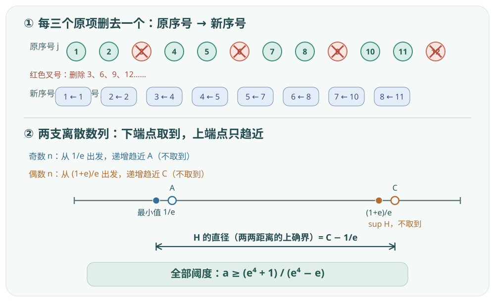

指数函数、删项数列与集合阈度：从奇偶分组到直径
先由微分等式锁定 ，再把删项后的数列按奇偶项求和，最后用集合 H 的上确界求出全部阈度。
01 · 先理解题目在问什么
这道题不是三个互不相关的小题，而是前后相扣的一条链：
- 指数函数的导数等于自身，参数会被唯一确定；
- 每删去原数列中第三项，保留项的“新序号”与“原序号”不再相同，需要建立分段映射；
- 将新数列前 项和除以题目给定的指数项，得到集合 H。奇数 n 和偶数 n 会产生两支不同的数值序列，最后要找所有元素之间的最大可能距离。
最难的不是求和，而是最后一步：上界 C 不属于 H，但偶数分支可以无限接近 C。要判断“阈度”的最小值，必须使用上确界，而不能误以为集合一定有最大值。
解题路线：微分等式 → 删除项的原序号映射 → 奇偶分组求和 → 两支数列的上下界 → 集合直径。
02 · 原题与题源
21．（本题满分18分）本题共有3个小题，第1小题满分4分，第2小题满分6分，第3小题满分8分。
已知定义在实数集 上的函数 （e 是自然对数的底数）满足 且 ，删除无穷数列
中的第3项、第6项、…、第3n项（），余下的项按原来顺序组成一个新数列 ，记数列前 n 项和为 。
（1）求函数 f(x) 的解析式；
（2）已知数列的通项公式是 ，，求函数 g(n) 的解析式；
（3）设集合 X 是实数集 R 的非空子集，如果正实数 a 满足：对任意 ，都有 ，则称 a 为集合 X 的一个“阈度”。记集合
试问集合 H 存在“阈度”吗？若存在，求出集合 H“阈度”的取值范围；若不存在，试说明理由。
转录说明：原卷第6页题干与指数、分式、奇偶项表达均已对照页面渲染核对；参考答案分布在第7、8页。原卷只列结果式，没有提供逐步官方解析。本文的证明、数列分类和集合直径论证均为本站独立推导。
03 · 三个关键观察
- 指数永不为零：从 f=f′ 可以直接比较系数，不需要解微分方程。
- 每三个原序号保留两个：第 n 个保留项的原序号必须按 n 的奇偶分开写，不能直接把 f(n) 当作 t_n。
- “阈度”本质是集合直径的上界：它要求所有两两距离都不超过 a；最小阈度由两端的极限差决定，而不要求上端点真的属于 H。
04 · 分步推导
第（1）问：先确定指数函数
- 求导并比较系数
原函数为 。因为 k、b 是常数，
由 f(x)=f′(x)，且指数项始终严格为正，得到 k=1。
为什么可以约去指数项？因为对任意实数 x，，不存在零因子；这正是比较系数合法的依据。
- 用给定函数值确定 b
将 x=−1 代入 ：
因此第一问答案为
。
第（2）问：把“删掉每三个”翻译成原序号
- 先写出实际保留的项
删除原序号 3、6、9、12……后，留下
新序号 n=3 对应原序号 4，不是 3。这里要始终区分“新序号”和“原序号”。
- 每两个新项对应一个长度为 3 的原序号块
把原序号按 (1,2,3)、(4,5,6)、(7,8,9)… 分组。每组保留前两项，删除第三项。若 −1 为奇数，它是第 m 组第一项，原序号为 3m−2；若 n=2m 为偶数，它是第 m 组第二项，原序号为 3m−1。
检查：代入 ,2,3,4，得到原序号 1,2,4,5，与实际保留列表一致；两支相邻新项不会重复，也不会漏掉任何非 3 的倍数。
- 把通项改写成两支指数数列
利用 ：
因此新数列前八项为 ，奇偶两支各自是公比为 的等比数列。
第（3）问：先求 ，再求集合 H 的直径
- 分别求偶数项和与奇数项和
记
奇数项和比前一个偶数项和多出最后一项：
为什么公比是 ？原序号每向后移动一组增加 3；指数函数 ，因此每组两项整体乘以 。这里是等比求和，不能把新序号直接代入原函数。
- 按 n 的奇偶化简原题分母
记记原题中 f 的自变量为 。当 时，原题自变量化为 ，所以 ；当 时，自变量化为 ，所以 。这一步说明题干中含 的表达式，正是为了让两种奇偶情况分别简化。
- 得到 H 的奇、偶两支
再记
对奇数 （m≥0），把 除以 ，整理为
并利用 ，可知奇数分支从 开始递增，并趋近 A，但永远小于 A。
对偶数 （m≥1）：
偶数分支从 开始递增，趋近 C，但不取到 C。还可直接验证 。
端点检查： 时 ，所以下端点确实取到；偶数分支只在 时趋近 C，因此 C 是上确界，不是最大值。H 是两支离散数列的并，不是连续区间。
- 用两端距离刻画所有阈度
“阈度”要求任意两点之间的距离都不超过 a。因为 H 中最小值是 ，上确界是 C，所以两两距离的上确界为
若 a 不小于这个上确界，所有两点距离自然都不超过 a；若 a 小于它，利用偶数分支无限接近 C，可以找到足够大的偶数项，使它与已取到的最小值 之间的距离超过 a。因此最小阈度就是这个上确界，全部阈度为
左端点必须取等：虽然 H 的上确界 C 没有被取到，但 a 等于两两距离的上确界仍足以覆盖所有实际距离。
05 · 原创图解：删项映射与两支数列的端点

06 · 原卷参考答案与独立核验
（1）；（2）g(n) 按奇偶分段，分别为 (3n−1)/2 与 (3n−2)/2；（3）
本站独立复核：由 可知 。数值核验（仅辅助检查）：最小值 ≈0.367879，上确界 C≈1.439550，直径约 1.071671；解析表达式与原卷第8页最后一行一致。原卷只列答案，本文所有中间推导均为本站独立编写。
易错点：① 删除的是原序号的3倍数，不是新序号的3倍数；② 求 T_n 时必须按奇偶项拆分；③ 把“趋近 C”误写成“最大值为 C”；④ 误以为 a 必须严格大于直径，忽略题目定义用的是“≤”。
07 · 方法迁移
遇到“删去每隔若干项”的数列，先写保留项的原序号映射，再分组求和；遇到“任意两点距离不超过 a”的集合问题，可以转化为集合直径的上确界。若一端点不取到，要区分最大值与上确界，但阈度的最小值仍可等于该上确界。